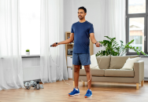
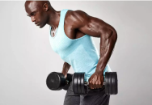
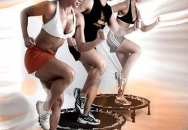
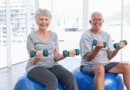
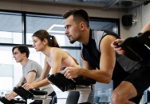

Exercício Físico Também é Alimento para o Corpo e a Alma
A Prática de Exercícios Físicos também é um Investimento
Atividade Física em Casa

Incluir atividades físicas na rotina oferece inúmeros ganhos e isso não deve ser uma novidade para você.
Além das possibilidades de frequentar uma academia e realizar atividades ao ar livre, existe a alternativa de manter o corpo em movimento sem sair de casa.
DROP-SET: Técnica, Benefícios e como Aplicar no Treino

Se você deseja ganhar massa muscular, além de incluir na dieta alimentos para hipertrofia,
apostar no método drop-set é uma ótima decisão. A partir dessa técnica, é possível adquirir força e resistência nos treinos e, consequentemente,
aumentar a carga e obter resultados em curto período de tempo.
O que é Jump? Entenda mais sobre este Exercício

O jump é uma atividade física realizada em um trampolim, a qual consiste em várias repetições de saltos e de outros tipos movimentos.
Ela é considerada como uma aula divertida e muito eficiente, uma vez que é feita ao som de músicas vibrantes e animadas para tonificar e queimar calorias.
Exercícios para Idosos: Veja Algumas Indicações

Ideais para melhorar a saúde física e mental, as práticas direcionadas à terceira idade conseguem movimentar diferentes áreas do corpo.
Dessa forma, é possível potencializar os ganhos e, consequentemente, garantir autonomia para viver a vida da forma que desejar,
seja para correr atrás dos netos, viajar e muito mais.
O que é Crossfit?
O CrossFit realmente é uma modalidade esportiva que melhora a capacidade física, mas você o que seus treinos envolvem?
Aqui você verá tudo que você precisa saber sobre o CrossFit, incluindo seus benefícios e alguns exemplos de exercícios.
O que é Spinning? Conheça a Prática!

Dentre todos os seus benefícios, o spinning está muito associado à prática de andar de bicicleta ao ar livre, no entanto,
se difere pelo fato de que, majoritariamente, simula o percurso em vias íngremes, com subidas e descidas.
Além disso, essa atividade física também costuma seguir o ritmo de músicas que são tocadas ao longo do percurso.